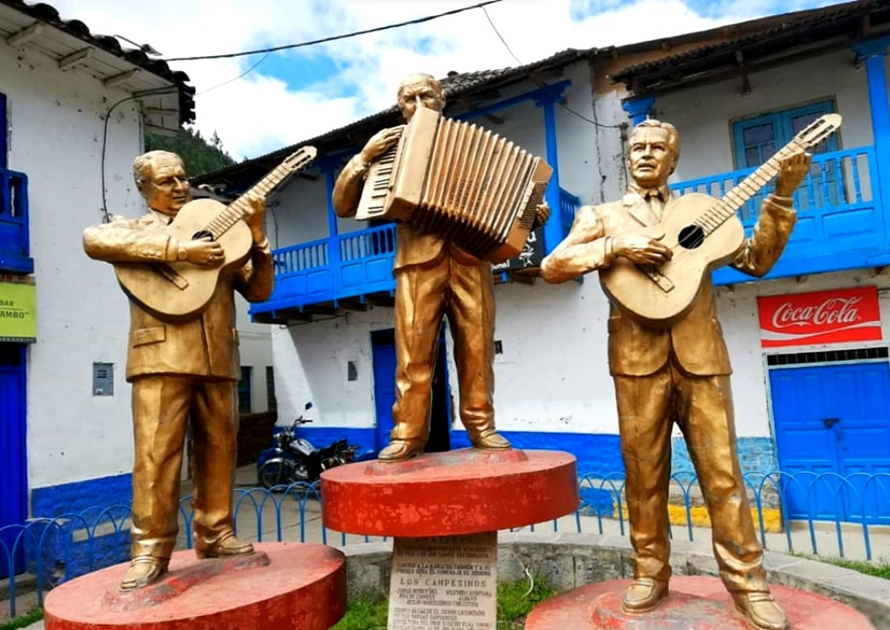
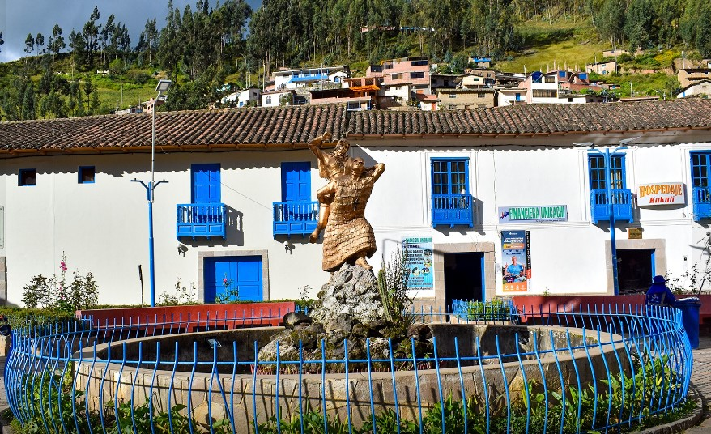
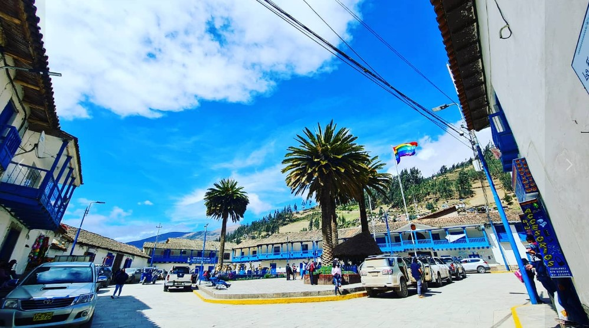

La Plazoleta Los Campesinos es un espacio emblemático en Paucartambo donde se rinde homenaje a los trabajadores del campo. En el centro de la plazoleta se encuentra una estatua que simboliza la importancia del campesino en la cultura y economía local.
Historia: Esta plazoleta fue creada para honrar el arduo trabajo y la dedicación de los campesinos de la región, quienes desempeñan un papel crucial en la producción agrícola. Es un lugar de encuentro y celebración, especialmente durante las festividades locales.
Crédito de la imagen: Autor Desconocido
La Plazoleta Kukuli es conocida por su belleza arquitectónica y su entorno tranquilo. Es un lugar popular para turistas y residentes que buscan un espacio de descanso y reflexión.
Historia: La plazoleta lleva el nombre de "Kukuli", que en quechua significa paloma. Representa la paz y la armonía, y es un lugar donde se realizan diversas actividades culturales y sociales. Su diseño combina elementos tradicionales andinos con influencias coloniales.
Crédito de la imagen: Autor Desconocido
La Plaza Mayor es el corazón de Paucartambo, rodeada de edificios históricos y llenas de vida durante las festividades. Es un punto de referencia y reunión para los habitantes y visitantes.
Historia: La Plaza Mayor ha sido testigo de numerosos eventos históricos y culturales a lo largo de los años. Durante la Festividad de la Virgen del Carmen, se convierte en el epicentro de las celebraciones, con procesiones, danzas y actividades religiosas. Su arquitectura refleja la mezcla de influencias españolas e indígenas.
Crédito de la imagen: Autor Desconocido